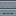

蒸気ノズル
alaindustrial:steam_nozzle
概要
蒸気ノズルは原子炉の排気口です。原子炉カラムで沸いた水は蒸気に なり、蒸気はカラムにたまり、どこかへ逃がさなければなりません。ノズルがその「どこか」です。普通の 流体パイプで蒸気を受け取り、自分が向いているブロックへ吹き出し、 蒸気はそこで消えます。ここから何かを取り戻すことはできません。
なぜ排気を規則ではなくブロックにしたのか。もし蒸気がカラムの中で勝手に消えるなら、回路は半分しか ありません。プレイヤーは水をつないだきり、冷却のことを二度と考えなくなります。パイプで外へ出さねば ならない蒸気は、冷却を両端のある本物の循環に変えます。ついでに部屋の姿も決まります——パイプは低い ところから入り、高いところから出て、その先で何かが蒸気を噴いている、という姿です。
何をするか
| 性質 | 値 |
|---|---|
| 受け取るもの | 蒸気のみ |
| 渡すもの | なし — ノズルのタンクから一滴も取り出せない |
| タンク | 500 mB |
| 排出速度 | 100 mB/t |
| パイプをつなぐ場所 | 吹き出し口が向いている面以外のどの面でも |
| パーティクル | 吹き出し口の前の雲。雲の数は実際の流量に比例（1〜8） |
タンクは意図して小さく、流量 5 ティック分しかありません。役目は一瞬ノズルを追い越したラインを ならすことであって、貯蔵ではありません。大きくすれば、プレイヤーはそこに蒸気を停めておくように なり、「ノズルに届いた蒸気は失われる」という、回路の釣り合いを支える前提が崩れます。
吹き出し口の面は意図的にパイプへ公開していません。そうでなければ、ノズルが吹き出している先の ブロックへ排気ラインを引き込み、自分で自分に給気させることができてしまいます。
吹き出し口の前に空気が要ります
蒸気はノズルが向いているブロックへ放出されます。そのブロックが置き換えられないもの（壁、土、別の 機械）だと、ノズルは止まります。タンクは空にならず、その手前のラインが詰まり、カラムは沸騰を やめ、原子炉の温度は上がっていきます。
これについての通知はありませんし、これからもありません——壁に埋めたノズルは何もしません。実物と 同じです。ただし結果のほうは、プレイヤーに関わる側で分かります。蒸気の行き場が無くなると 制御装置の水位バーが黄色くなり、熱のゲージが上がります。
ノズルはいくつ必要か
ノズル 1 個の排出は 100 mB/t、パイプ1 区間は 50 mB/t、 原子炉入口も 50 mB/t です。HV 上限の部屋は 1 ティックあたり 224〜247 mB の蒸気を出すので、原子炉の完全な排気は外向きの入口 5 つ、パイプ 5 系統、 ノズル 3 個になります。配置ごとの数字は
ノズルへつないだパイプは、そこへ排出する設定でなければなりません。他の流体消費先と同じく、 パイプの面をレンチで「排出」に切り替えます。
ブロックの性質
| 項目 | 値 |
|---|---|
| 形状 | 吹き出し方向に 10×10×10 — 完全な立方体ではない。管は壁から 16 ピクセル中 10 だけ突き出す |
| 遮蔽 | 完全な立方体ではない |
| 硬さ | 4.0 |
| 爆発耐性 | 20.0 |
| 道具 | ツルハシ（ドロップに必須） |
| 音 | 金属 |
| 向き | 6 方向すべて |
| 自前のタンク | 500 mB、ティックはサーバー側のみ |
向きはプレイヤーがクリックした面から決まります。吹き出し口は常に、押し当てた面から見て外を 向きます。天井にも床にも取り付けられます——向きを決めるのは設置であって、別途の回転ではありません。
蒸気の残量はクライアントへまったく同期されません。雲はサーバー側で生まれ、近くの全員へ自動的に 送られます。同期しても見せるものがありません——モデル上に蒸気は見えないからです。
どこに設置するか
ノズルはシェルの一部ではありません。部屋の内側に置けば内装のマスをひとつ占めます（違反では ありませんが無意味です。蒸気は部屋の中に残ります）。シェルのブロックの代わりに壁へ埋め込めば 破れができ、部屋は解けます。置き場所は外側、原子炉入口の隣の壁で、 吹き出し口を開けた空へ向けます。
レシピ
クラフト: 一度に ×2。
I I = 鉄インゴット ×3
I P I P = 流体パイプ ×1
C C = 機械ケース ×1レシピは意図して安く、パラジウムも遮蔽合金も要りません。ノズルは密閉された部屋の外にぶら下がって おり、圧力を保つ必要も遮蔽する必要もないからです。回路の高い部分は入口であって排気ではなく、 ノズル 3 個が壁 1 枚ぶんの値段であってはなりません。
進行
ティア: なし（このブロックにエネルギーはありません）。 必要: 流体パイプと機械ケース — つまり原子炉よりずっと前に 身につけた普通の流体物流。 解放: 閉じた冷却回路。排気が無ければカラムの蒸気タンクが満ち、沸騰が止まり、冷却も無くなります。
関連項目
蒸気 — 流体そのもの。なぜワールドに存在せず、バケツで汲めないのか。 原子炉カラム — 蒸気が生まれる場所と、それが去らねばならない理由。 原子炉入口 — 蒸気が密閉された部屋を出る方法。 原子炉制御装置 — 排気が詰まったことが分かる場所。 流体パイプ — 蒸気をノズルまで運ぶもの。
クラフト
定型クラフト
▶
×2
蒸気ノズル